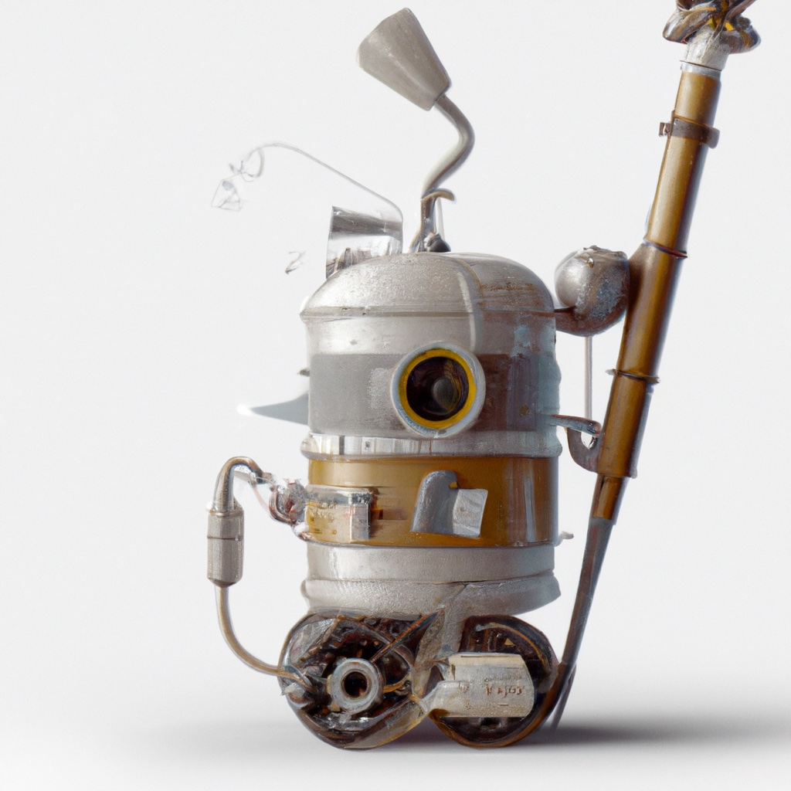

3. A Robot Vacuum Cleaner#
Where we will reason over time about probabilistic actions in a discrete state space.
{kind=link}
The second robot we will discuss is a mobile robot, modeled on the vacuum cleaning robots that many of us are already familiar with. We assume that this robot is equipped with hardware and software such that it can perform navigation, motion planning, and motion control, but we will not be specific on how these capabilities are implemented. This assumption allows us to focus on high-level problems (for example, deciding which room to clean next), without worrying now about low-level details (e.g., planning specific paths to cover a particular room, or navigating through a doorway).
Besides the obvious fact that our vacuum cleaning robot can move, our vacuum cleaning robot exhibits several key differences from the trash sorting robot discussed in the previous chapter. First, the effects of actions depend on the current world state; if a robot is in the living room and moves to its left, it will arrive to a different location than if it had started in the office. Second, the actions executed by the vacuum cleaning robot have uncertain effects. This is rather different than the actions of the trash sorting robot, which achieved its goals deterministically, regardless of the current state (the “move object to the metal bin” action moves an object to the metal bin, regardless of the category of the object, and with 100% reliability). Third, because the effects of actions depend on state, achieving goals in the future will depend on the actions the robot executes now (since current actions affect future states). Therefore, this robot must consider how the world state evolves with the passing of time.
Hence, in this chapter, we will learn about probabilistic outcomes of actions. For our vacuum cleaning robot, states correspond to rooms in the house, and trajectories correspond to the robot moving from room to room. We will model uncertain actions with conditional probability distributions, just like we did with sensor measurements in the previous chapter. Using these, we will be able to to propagate uncertainty forward in time for specific sequences of actions, and learn how to generate sample trajectories from the corresponding probability distributions.
Sensing will be quite limited in this chapter. We will model the use of a simple, discrete light sensor. However, because sensor measurements depend on state, and because state depends on the sequence of actions that has been executed, perception becomes a more interesting problem. While our trash sorting robot relied on simple MLE or MAP estimation using the current sensor reading, the vacuum cleaning robot will need to combine knowledge about the history of its actions (which have uncertain effects) with the sequence of sensor measurements. We will solve this perception problem using Hidden Markov Models (HMMs), which define probabilistic models for sensing over time. And, crucially, we show how to convert them into a factor graph, allowing us to efficiently find the most probable sequence of states given a sequence of sensor measurements and actions.
Planning is also more interesting for our vacuum cleaning robot. Instead of choosing a single action to minimize a cost for the current action, we will reason about sequences of actions that occur over time. To do this, we will introduce Markov Decision Processes (MDPs). An MDP adds the notion of reward, which will allow us to reason about optimal actions. We will even be able to deduce an optimal policy, i.e., a recipe for what to do in each state to maximize the aggregate reward over time.
Finally, we will introduce the notion of reinforcement learning, where we will estimate the parameters of an MDP using data that is obtained during the robot’s normal operation.